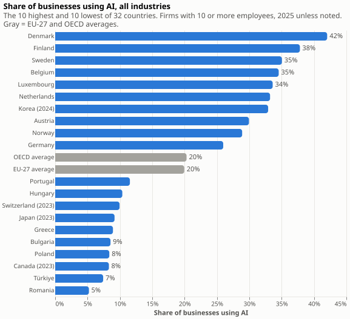

2.0 - Copying a Second Chart
For this problem, you'll re-create a chart of your choice.
-
Pick a chart, either from your static project or something we've
looked at in class that you'd like to re-create. I'd recommend
something that doesn't need a huge amount of data.
-
Copy the image into this directory and update the
<img> tag below:
-
You'll need to export the data used to create your chart. I recommend
adding a CSV or JSON file of the data you are going to visualize. You
may want to use DataFrame.to_json or DataFrame.to_csv to export
already prepared data from Python.
-
Finally, create a replica of the chart below. Don't worry about exact
fidelity, but focus on adding all elements: data, axes, labels, etc.
